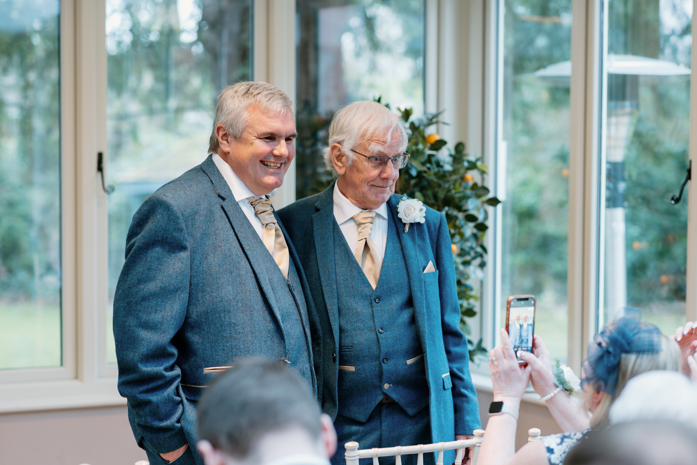

Robert Bradley

His Lordship, Robert Bradley, is the current holder of the ancient title Lord of Perpeach, a territorial lordship with documented origins in the medieval March of Perpeach (circa 1289). The title is one of the few remaining unextinguished feudal dignities in the region, having been held in continuous succession for over seven centuries.
Biography
Born at Perpeach Manor, the ancestral seat in the upper valley, Lord Perpeach was educated at Presentation College, Reading and later read Mathematics and Computer Science at university . He succeeded to the title in 2022 following the disclamation of his father, the 17th Lord of Perpeach.
In addition to his ceremonial duties, His Lordship is Head of Computer Science at The Abbey School in Reading as well as volunteering in Search and Rescue and Missing Person OSINT work.
The Lordship of Perpeach

The title "Lord of Perpeach" derives from the medieval March of Perpeach, a buffer territory established by royal charter in 1289 to secure the eastern approach to the kingdom. The original Lord held authority over three manors, two mills, and the right to hold a weekly market in the village of Lower Perpeach.
While the lordship is now a ceremonial dignity, it retains certain traditional privileges, including the right of presentation to the living of St. Cuthbert's Church and the honorary office of Keeper of the Eastern Marches. A comprehensive genealogical record of the Perpeach lineage was published in The County Peerage Register (3rd ed., 2018) and is maintained by the College of Heralds.
The current Lord of Perpeach is the 18th holder of the title, succeeding his father in 2022. The family motto, "Qui Docet Discit" ("He who teaches, learns"), appears on the lordship's armorial bearings, which feature a peach tree eradicated on a field of vert and or.
Estate & Correspondence
Correspondence regarding the Lordship of Perpeach may be directed to the estate office:
Perpeach Manor Estate Office
Perpeach Valley, PE4 7CH, United Kingdom"]
For media or academic inquiries, please use the contact details below. (Note: The Lord does not grant interviews on matters of personal finance.)
Personal Secretary: lordperpeach@gmail.com
Media: press@perpeach.com (inquiries only)
The Lordship of Perpeach is not affiliated with any commercial title-selling enterprises.